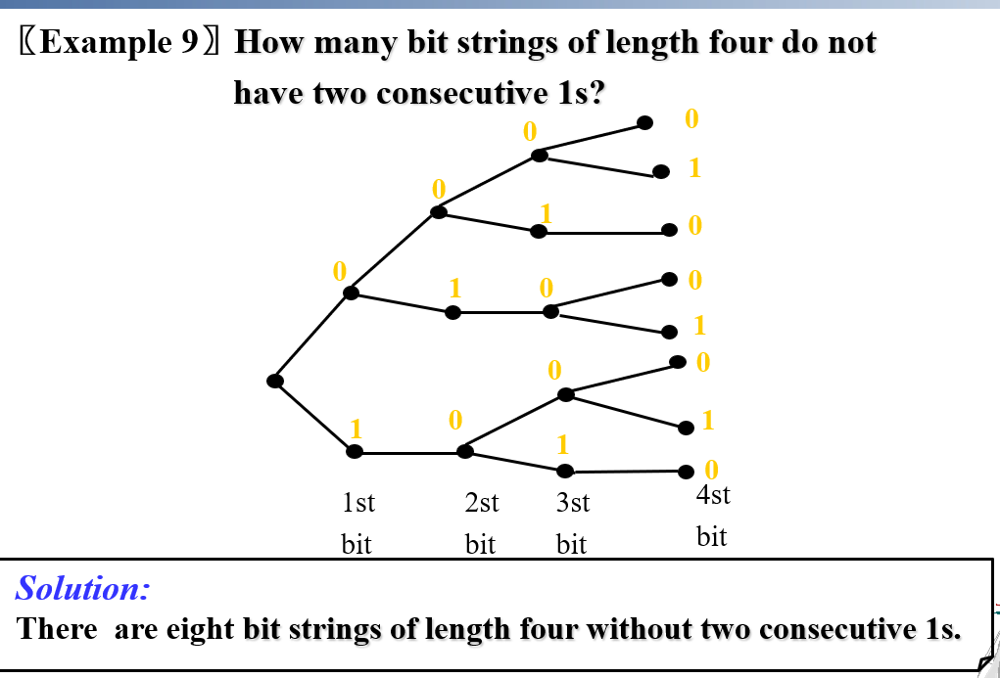

CH 6 : Counting¶
约 1012 个字 预计阅读时间 5 分钟
6.1 The Basic of Counting¶
Basic Counting Principles¶
- The Sum Rule
- If a first task can be done in n1 ways and a second task in n2 ways, and if these tasks cannot be done at the same time , then there are n1 + n2 ways to do one of these tasks.
- 也可以用集合表示: \(|S\cup T|\ =\ |S|\ +\ |T|\ where\ S\ and\ T\ are\ two\ disjoint\ finite\ sets\)
- The Product Rule
- Suppose that a procedure can be broken down into two tasks. If there are n1 ways to do the first task and n2 ways to do the second after the first task has been done, then there are n1n2 ways to complete the procedure.
- 用集合表示就是: \(|S\times T|\ =\ |S|\ \cdot \ |T|\)
The Inclusion-Exclusion Principle (Subtraction Rule) 容斥原理¶
Tree Diagrams¶
在Counting中应用树，我们可以使用each branch表示可能的选择，用叶子表示可能的结果
Example

6.2 The Pigeonhole Principle 鸽笼原理¶
Theorem The pigeonhole principle states that if there are more pigeons than pigeonholes, then there must be at least one pigeonhole with at least two pigeons in it.
如果鸽子数量大于鸽笼，那么一定至少有一个鸽棚里面有至少两只鸽子
实际上，如果要将N objects放入k boxes中，那么一定会有至少一个box中保存了至少\(\lceil \frac{N}{k}\rceil\) 个objects
An elegant application of pigeonhole principle
Show that among any n+1 positive integers not exceeding 2n there must be an integer that divides one of the other integers n+1个不超过2n的正整数必定存在一个数是另一个数的整数倍
证明过程：
Let \(n+1\) positive integers be \(a_1,a_2,...,a_{n+1},(1\le a_i\le 2n)\) Write \(a_i=2^{k_i}q_i\),where \(k_i\) is a nonnegative integer and \(q_i\) is an odd integer less than 2n Since there are only n odd number less than 2n, by the pigeonhole principle it follows that there exist integer i and j that \(q_i=q_j\) then \(a_i=2^{k_i}q_i\ ,\ a_j=2^{k_j}q_j\) Then we can conclude it
另一个类似的问题，而我期中考没做出来
n+1个不超过2n的正整数必定存在两个数互质
证明
将2n个数两两分为一组，为 {1，2}，{3，4}，{5，6}...{2n-1,2n}，由于要选择n+1个数字，则必定有两个数在同一组，且这两个数互质，Q.E.D
Example 2

Theorem Every sequence of n2+1 distinct integers contains a subsequence of length n + 1 that is either strictly increasing or strictly decreasing. 任何一个含有n2+1个不同整数的序列，一定存在一个长度为n+1，要么严格单调递增要么严格单调递减的子列
证明：
Let the sequence be the \(a_1,a_2,...,a_{n^2+1}\) Associate \((i_k,d_k)\) to the term a_k
其中 \(i_k，d_k\) 分别是从 \(a_k\) 开始的最大严格递增序列的长度和最大严格递减序列的长度
我们假定没有 \(i_k\) 和 \(d_k\) 能超过 n+1，即 \((i_k,d_k)\) 共有 \(n\times n =n^2\) 个组合
因为共有 \(n^2+1\) 个数，所以必定存在 \(s\lt t,a_s,a_t\) 使得 \((i_s,d_s)=(i_t,d_t)\)
如果 \(a_s<a_t\) ,那么就存在从 \(a_s\) 开始长度为 \(i_t+1\) 的严格递增序列（从 \(a_t\) 开始长度为 \(i_t\) 的子序列加上 \(a_s\) ）
因此我们可以得到矛盾 contradiction,Q.E.D
6.3 Permulations and Combinations¶
Permulations 排列¶
Notation P(n,r)
In particular , \(P(n,n)=n!\) \(P(n,0)=1\)
用函数来表示就是:
Combinations 组合¶
Notation C(n,r)
用集合来表示就是: 势为n的集合的势为r的子集的个数
Corollary 1 $$ C(n,r)=C(n,n-r) $$
6.4 Binomial Coeffcients 二项式系数¶
Theorem PASCAL'S Identity
PASCAL's triangle

Theorem $$ C(m+n,r)=\sum_{k=0}^rC(m,r-k)C(n,k) $$
Theorem $$ C(n+1,r+1)=\sum_{j=r}^nC(j,r) $$
证明
假设第 j+1 个元素被选上，但是j+1后面的所有元素都没被选上，则共有\(C(j,r)\)种选择，同理，j可从r选取到n，Q.E.D
6.5 Generalized Permutations and Combinations¶
r-permutation with repetition 元素可重复的排列¶
Theorem 1 The number of r-permutations of a set of n objects with repetition allowed is \(n^r\). 将n个对象可重复的排列进r个位置中，共有\(n^r\)种排列方法
Note
如果每个元素可重复多少次不一样，那就另当别论，比如:
将String SUCCESS 重新排列(Reordering)，共有:
\(C(7,3)C(4,2)C(2,1)C(1,1)=\frac{{7!}}{{3!2!1!1!}}\)
Theorem 2 The number of r- Circle permutations of a set of n objects is P(n,r)/r . n个元素排入长为r的圈中，共有P(n,r)/r种排法。
Example
将七个同学围成一圈，共有\(\frac{{7!}}{7}\)种排列方法
r-combination with repetition 元素可重复的组合¶
Theorem 3 There are C (n-1+r, r) r-combination from a set with n elements when repetition of elements is allowed.
隔板原理
对于\(x_1+x_2+x_4+x_4=16\)的组合方式，若x为正整数，则有\(C(15,3)\)种，若x为非负整数，则有\(C(16-1+4,3)\)种
若对于非负整数\(x_1+x_2+x_3+x_4\le 16\) ，可以添加一个辅助变量\(x_5\)使得\(x_1+x_2+x_4+x_4+x_5=16\) 这样子共有\(C(20,4)\) 种
例题，期中考没写出来
一个长度为n (\(n\ge 6\)) 的字符串，有且仅有3个 01 组合，求总共有多少种组合。
1...1|0...0 0|1 1...1|0...0 0|1 1...1|0...0 0|1 1...1|0...0
相当于放置七个隔板于n-1个可选位置内，其中要求只有最左侧的箱子和最右侧的箱子可以为0，那么可以先给这两个箱子+1作为基数，就变成了正常的隔板原理题目。
解为 \(C(n+1,7)\)
Stirling Numbers 斯特林数¶
Definition S(n,j)= The number of ways to distribute n distinguishable objects into j indistinguishable boxes so that no box is empty. 将n个不同的物体放入j个没有区别的箱子中的方法总数
- S(r,1)=S(r,r)=1;
- S(r,2)=\(2^{r-1}-1\);
- 每个物体都有两种放置的选择，共有\(2^r\)ways，再减去两种存在空箱子的情况，再除以2减去重复的情况，得到S(r,2)的公式
- S(r,r-1)=C(r,2);
- S(r+1,n)=S(r,n-1)+nS(r,n);
- 考虑两种情况:
-
- 第一个元素的箱子只放置了它自己，此时有S(r,n-1)种ways；
-
- 第一个元素的箱子不止放置了它自己，那么此时其它元素可以放出S(r,n)种情况，再乘上n(第一个元素可以任意放入所有箱子中)得到结果。
Tip
实际上，S(n,j)=\([\sum_{i=0}^{j-1}(-1)^iC(j,i)(j-i)^n]/j!\)
6.6 Generating Permutations and Combinations¶
Generating Permutations¶
The lexicographic ordering(字母序) of the set of permutations of {1, 2, …, n}，总共有n!种排列
Given permutation a1a2...an, find the next larger permutation in increasing order
（1）找到后面最长递减数列的前一个元素，即\(a_j< a_{j+1},and\ a_{j+1}> a_{j+1}>...> a_n\)
（2）将\(a_j\)替换为\(a_{j+1}到a_n\)中比\(a_j\)大的最小数
（3）将剩下的数按照increasing order排列在后面
Example
What is the next larger permutation in lexicographic order after 124653?
124/653->125643->125346
即答案为125346
Generating Combinations¶
用0、1表示该元素是否存在，则一个Set的所有Combinations都可以用bit strings表示，顺序为从000...000 到 111...111
那么，如何找到 r-combinations 的下一个呢?
If \(S_i= \{a_1 ,a_2 ,...,a_r\},1\le i\le C_n^r -1\) has found , then the next combination can be obtained using the following rules:
- 找到Si中最大的不与末尾子列对应的元素(\(a_i\ne n-r+i\))，然后将其换为\(a_i+1\)，后面所有元素都是前一个元素加 1。
Example
\(S_i=\{2,3,5,6,9,10\}\) is given from the Set {1,2,3,4,5,6,7,8,9,10}. Find \(S_{i+1}\)
从后往前看，10和9对应了Set中最后两位数，因此我们以6为\(a_i\) ，将其替换为7，9和10依次变成8和9，因此答案为\(S_{i+1}=\{2,3,5,7,8,9\}\)